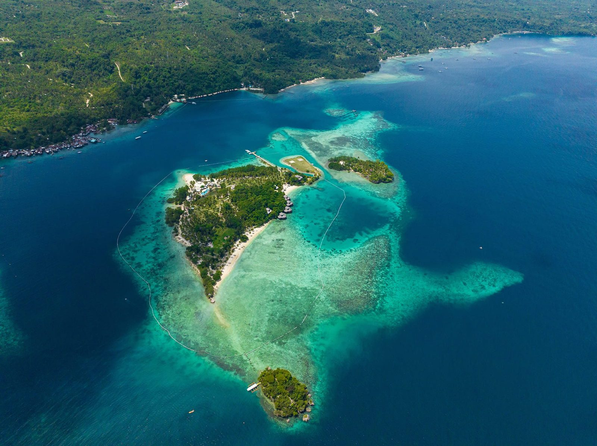
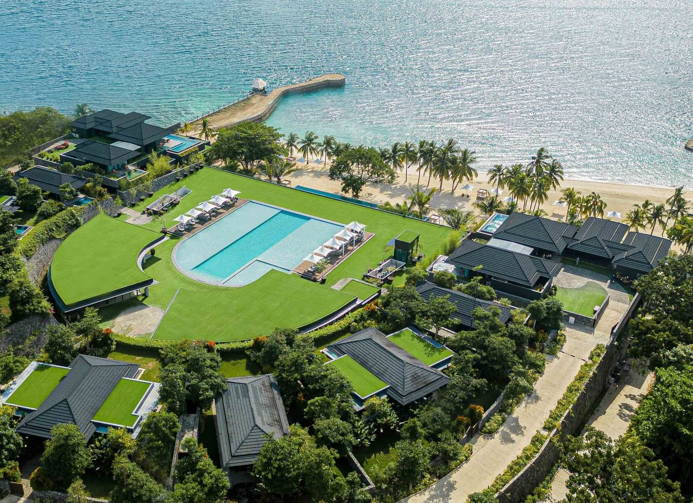
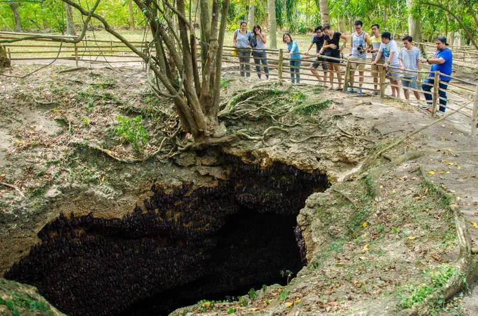
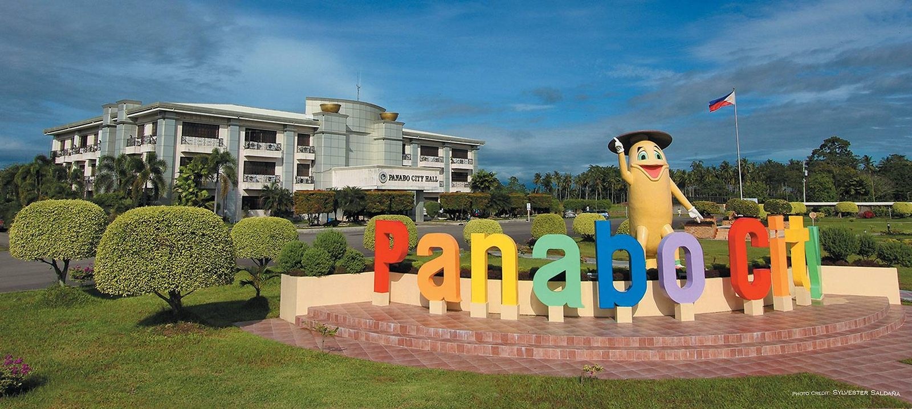
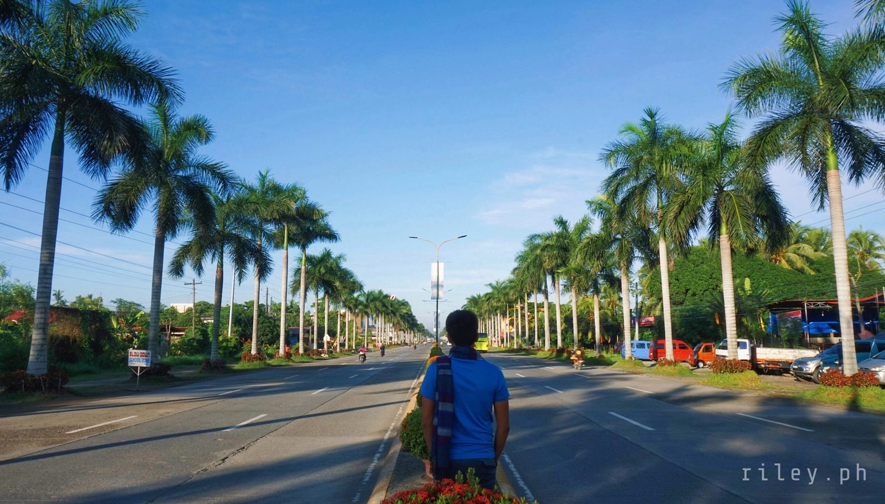
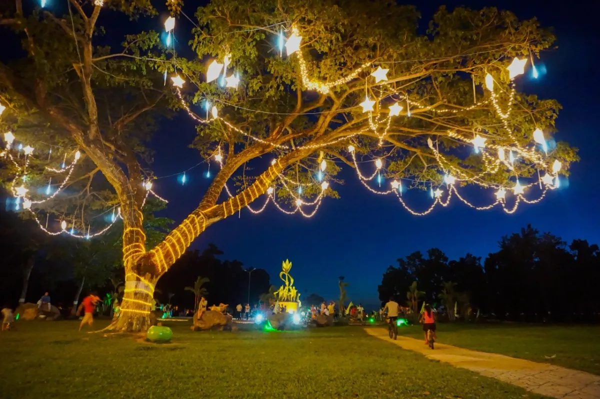
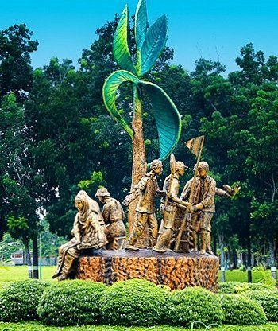
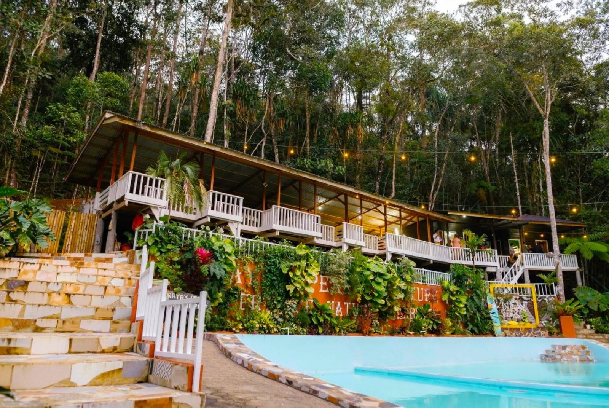
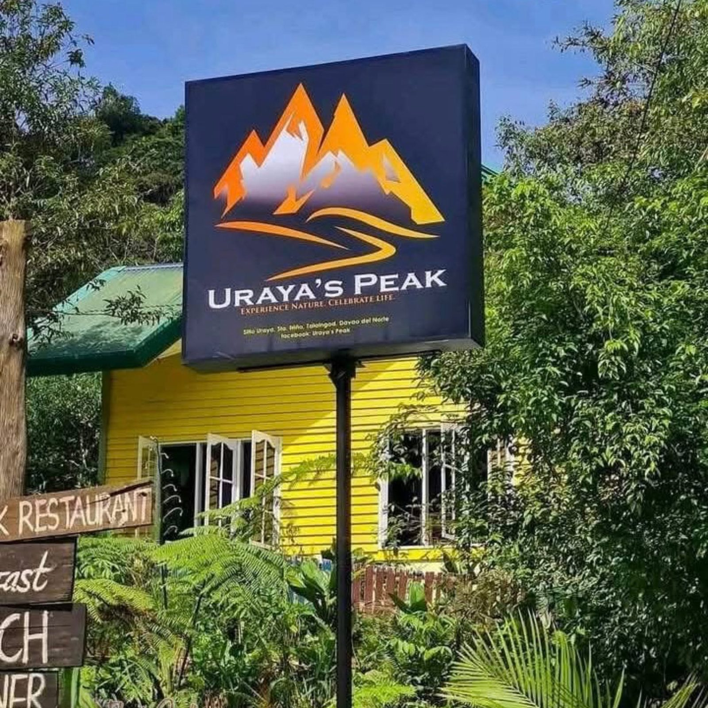

Eight places to start your trip through Davao del Norte.

Island Garden City of Samal
An island city in Davao Gulf with white-sand beaches, clear reefs, and green hills. Reach it by a short boat ride from Davao City. Dive spots like Ligid Island and beachfront resorts add more ways to enjoy the island.
Best for: beaches, snorkeling spots, and island hopping.
Ligid Island, a dive spot off Samal.

A beachfront resort on Samal.

Monfort Bat Cave
Look down into a cave where a very large colony of fruit bats roosts during the day.
Best for: wildlife viewing and a short, unusual stop.
Hagimit Falls
Cool turquoise pools and small cascades set in a shady forest, great for a relaxing swim.
Best for: a cool swim and forest scenery.

Panabo City
Known as the Banana Capital of the Philippines, with a lively city center and nearby farmland.
Best for: city sights and learning about banana country.

Tagum City
The provincial capital and a practical base with shops, restaurants, and city services.
Best for: staying overnight and city errands.

E-Park (Energy Park), Tagum City
A green public park in Tagum City where families stroll, bike, and relax. At night the trees glow with warm lights and star lanterns.
Best for: evening walks, family time, and night photos.

The sculpture at E-Park.
Uraya’s Peak, Talaingod
A mountain getaway in Sitio Uraya, Sto. Niño, Talaingod, with views above the clouds, a forest lodge, a pool, and a restaurant. Mountain trips can be rough, so confirm road and trail conditions with local guides before you go.
Best for: mountain views, photos, and a cool forest retreat.

The forest lodge and pool.

The entrance sign and cabin. “Experience Nature, Celebrate Life.”
Mt. Megatong, Sto. Tomas
A hiking destination in Sto. Tomas with grassy ridgelines and wide views of the surrounding mountains. Start early to catch the sunrise. Mountain trips can be rough, so confirm road and trail conditions with local guides before you go.
Best for: sunrise hikes and mountain scenery.
Quick comparison
Where to go for what kind of trip
Place
Type
Best for
Island Garden City of Samal
Island and beach
Beaches and island views
Monfort Bat Cave
Cave and wildlife
Watching fruit bats
Hagimit Falls
Waterfall and forest
Swimming and relaxing
Panabo City
City and farmland
City sights and banana country
Tagum City
Provincial capital
Overnight stays and errands
E-Park (Energy Park)
City park
Evening walks and family time
Uraya’s Peak
Mountain and nature retreat
Views above the clouds
Mt. Megatong
Mountain hike
Sunrise hikes and ridge views
Travel tips
Check the weather before island and waterfall trips.
Bring water, sun protection, and a little cash.
Follow local rules and guides at nature sites.
Take your trash with you.
Bring a light jacket for mountain areas, where mornings can be cool.